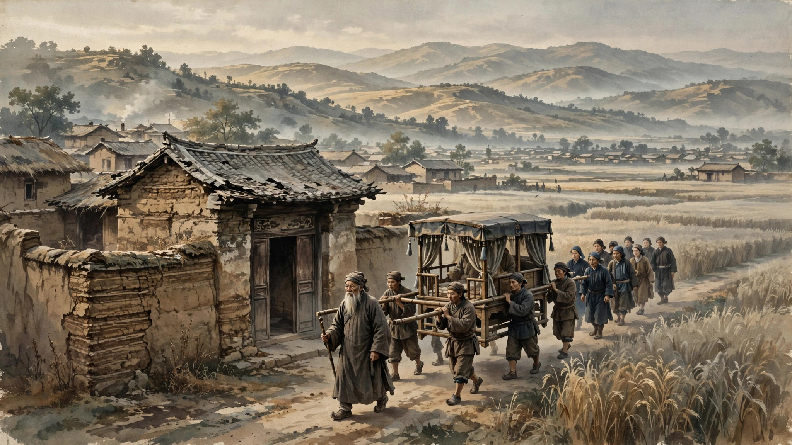
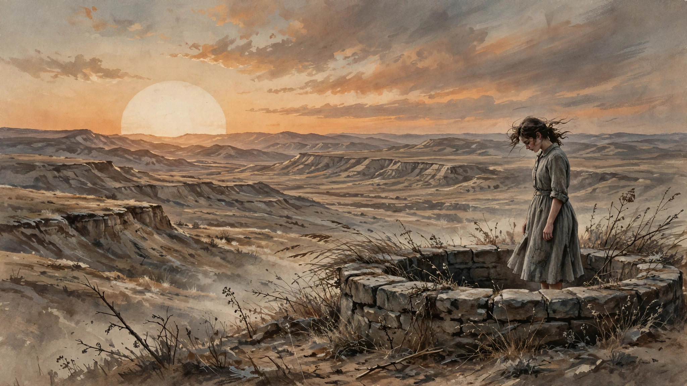

动荡时代的家族悲歌
欢迎点击上方名片关注我，您的支持是我坚持原创的最大动力。
看完了陈忠实的经典长篇《白鹿原》，心里说不出的悲凉和压抑。不是所有悲剧结局的小说都会给我带来这种心情。只是白鹿原里几位主角的命运太令人揪心了，给人以好人为何没好报的无力感。同时也让人意识到，在时代的巨轮下普通人是多么的渺小。
故事发生在陕西渭河平原一个名叫“白鹿原”（可能是虚构）的小村庄里，历史跨度是从清末民初到新中国成立这段动荡时期。人物主要是白鹿原两个大家族白家和鹿家的两代人。
先从两个家族说起。白、鹿两家世代住在白鹿原，两个家族虽然异姓但密不可分，基本算是同一个宗族的两个分支（类似曹和夏侯氏？）。两家祖先甚至还立下规矩，两个家族共用同一祠堂，族长由白鹿两家家长轮流担任。
故事从青年时代的白嘉轩开始。白嘉轩的出场就很有传奇色彩，说是讨了七个老婆，前六个都都不明原因暴死。用迷信的说法可能是白嘉轩的命太硬。他的发家更是奇幻。说是有天在某个山头挖到一个形如白鹿的东西，觉得是个宝物就埋下了。然后通过一些小聪明的手段从同族平辈鹿子霖那里买到包括那个小山头的几块宝地。接着在这些地里种罂粟小发了点财创下家业。后来在族里威望日隆就顺理成章地做了族长。

前面交代完家族背景，接下来的重头戏就发生在白鹿两家的下一代身上。
先说白家的三个儿子。老大白孝文，原本一老实孩子，忠厚稳重，本是继任族长的不二之选。但后他的人物形象可谓大起大落，先按下不表。老二白孝武，也是老实孩子。本来没啥表现机会，由于命运的安排顶替长兄当了新一代族长，不过他的成就也就止步于此了。老三孝义，秉承了老白家老实忠厚的基因，是个妥妥的庄稼汉形象，存在感几乎没有（后续他身上会发生一件雷人的事也暂且不表）。
说完老实巴交的白家三子（后期老大除外），就不得不隆重介绍本书中最有趣也是最悲情的灵魂人物之一，白家唯一的闺女，纯粹的革命者，白灵。title貌似长了点堪比龙妈，但作为本书塑造最成功的角色，她值得这么隆重的出场。她的出场没有她爹那么传奇，但离场却让人痛彻心扉。

白家还有个叫鹿三的长工，也是一老实巴交的庄稼汉。但由于忠心耿耿跟了白家三代，深受白嘉轩全家尊重和爱戴。他在本书中大部分时候默默无闻，直到他做了件震惊整个家族的大事。
鹿三的儿子鹿兆谦（小名黑娃）虽出身卑微，但后来凭着一股特有的狠劲和聪明劲做出了一番轰轰烈烈的事业，但结局很惨。他和前面介绍的白灵灵并列本书两大最有趣也是最悲情的灵魂人物。
黑娃媳妇小娥的一生是彻头彻尾的悲剧，是黑暗年代底层妇女任人宰割和践踏的悲惨命运的代表。
再讲讲鹿家父子，鹿子霖是族里仅次于白嘉轩的二号人物。这个人没啥本事，就是一LSP，一辈子就惦记裤裆里的那点儿事。凭着在族里的二号地位和本地的无品芝麻官位，把十里八乡的妇女都祸祸得差不多了。其播种积极性堪比段正淳，但只能算后者的低配，毕竟他只有本事吃窝边草。也许是老天的补偿机制，他的俩儿子还比较出息，都当了不大小小的官儿。可悲剧的是，俩儿子是对立阵营的，老大当了CCP的干部，老二当了KMT的军官。后来老二没死在抗日前线，倒死在了内战中（虽然享受了风光大葬）。老大虽然笑到了最后，但前半生基本处于东躲西藏的状态。所以说虽说俩儿子出息，但我们的"低配"段正淳同学始终没有实际享受到儿子出息带来的成果，反而担惊受怕了大半辈子。说到底这是个可笑又可悲的人物。
前面把人物的长卷铺开了，接下来就得聊聊这群人在时代的绞肉机里，是如何走向那让人喘不过气来的结局的。
先来填前面挖的坑，说说白家老大的“大起大落”和老三的“雷人往事”。
白孝文的堕落，始于低配段正淳（鹿子霖）精心策划的一场美人计。他沉溺于田小娥的温柔乡，被亲爹白嘉轩彻底逐出家门，一路沦落到卖地抽大烟、甚至上街讨饭的境地。可这人骨子里有股狠劲和虚伪的隐忍，后来借着当兵的机会触底反弹，一路钻营，不仅混成了县长，还在最后关头虚伪地投机革命。当他衣锦还乡、再次站在白鹿原上时，他已经从一个忠厚长孙变成了一个冷酷残酷的政客。
至于老三白孝义，他的“雷人”在于娶妻后多年无子。在宗法制度大过天的白鹿原，没有后代是天大的罪。于是，一向满口仁义道德、腰杆挺得笔直的族长白嘉轩，默许了一场由母亲白赵氏一手策划的“借种”闹剧——让儿媳妇和家里的长工（黑娃的兄弟）同房。这个情节荒诞、讽刺，却生动地撕开了封建礼教最后那层虚伪的面纱。
接着说那两个让人痛彻心扉的灵魂人物：白灵和黑娃。
白灵就像白鹿原上真正掠过的那只白鹿，纯洁、炽热、义无反顾。她为了信仰和家庭决裂，在国统区做地下工作，和鹿家的老大鹿兆鹏结为夫妻。可谁能想到，这样一个没死在国民党刀头下的“白鹿精魂”，最终却在自己阵营内部的肃反运动中，被极左分子活埋在了枯井里。临死前她的不解与绝望，是全书最让人心碎的重锤。
而黑娃呢？他的一生都在“折腾”。当土匪、砸祠堂、闹革命，后来拜朱先生为师，开始识字知礼，甚至在最后关头带着保安团起义，完成了自我救赎与招安。本以为他能落个好下场，可偏偏在胜利的前夜，被已经当上县长的白孝文公报私仇，以“反革命土匪”的罪名枪毙了。黑娃死得冤，死在了一个他亲手参与迎来的“新时代”里。
最后，不得不提那两个被封建腐朽和时代动荡共同绞杀的底层人物：鹿三和田小娥。
田小娥是黑娃一生唯一的温暖，却也是白鹿原所有人眼中的“荡妇”和“灾星”。她被鹿子霖利用，被白孝文当成救命稻草，最终在破窑洞里，被她视为亲人的鹿三从背后一刀刺死。鹿三杀她，是为了替白家“清理门户”，为了维护他心中神圣不可侵犯的宗族礼法。
可悲剧的闭环也在这里完成了。杀了小娥的鹿三精神彻底崩溃，被小娥的冤魂附身，疯疯癫癫中揭露了原上所有的丑恶，最后在孤独和羞愧中死去。而那位“低配段正淳”鹿子霖，在经历了两个儿子一死一逃、自己被坐牢抄家之后，最终也疯了。在冰天雪地里，这个一辈子精算计、爱面子的老东西，为了抢一口狗剩饭被活活冻死。
故事的最后，白鹿原上的老一代人里，只有白嘉轩还挺着那条被黑娃打断的瘸腿活到了新中国。
看着疯掉的鹿子霖死在眼前，这位一生挺直腰杆、恪守宗法传统的族长，心里是否有过动摇？我们不得而知。
《白鹿原》的悲凉就在于此：这里没有绝对的坏人，只有被时代裹挟的活人。
你想当好人、守规矩（如鹿三、早期的白孝文），规矩却变成了杀人的刀；你想顺应时代、闹革命（如白灵、黑娃），时代却反手把你碾成齑粉；反而只有像白孝文这样彻底抛弃底线、精于算计的伪君子，才成了最后的赢家。
白鹿原上的风依然在刮，两家人的祠堂依然在立，但那些鲜活的、痛苦的、挣扎过的灵魂，都已经变成了一抔黄土。所谓的“白鹿神话”，不过是落幕时的一声荒凉叹息。